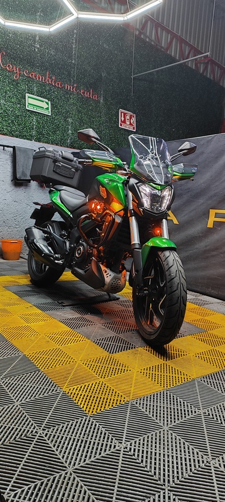

1

1. RECEPCIÓN
Al recibir tu moto, la fotografiamos y generamos un registro que será en adelante su historial. Esto ayuda a tener constancia del estado en la que se recibe la moto cada vez que llega al taller.